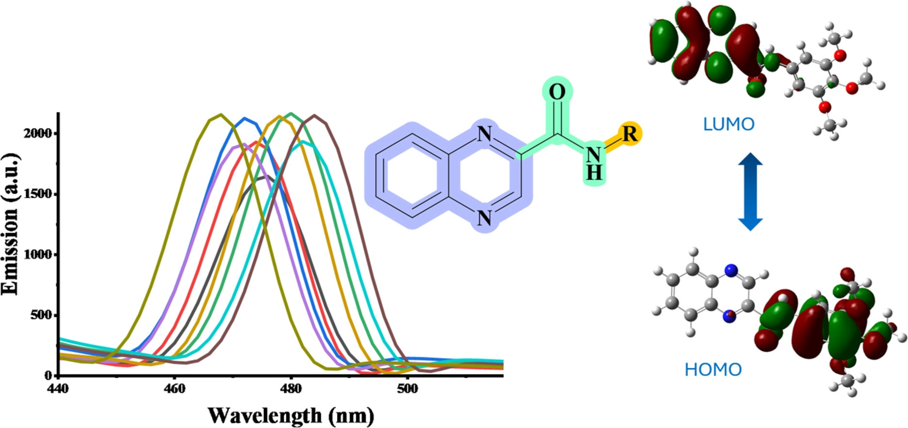

A nine-molecule quinoxaline carboxamide series shows how substituents tune fluorescence and charge redistribution while retaining wide-bandgap behavior.
The research question
How much can peripheral substituents change fluorescence and charge redistribution when the electron-deficient quinoxaline core is retained?

How we approached it
Nine quinoxaline-2-carboxamides with electronically different substituents were synthesized and characterized. Solvent-dependent spectroscopy, electrochemistry, and electronic-structure calculations were used to compare the series on a common molecular framework.
What we found
Absorption occurred at 314–333 nm and changed relatively little with solvent. Emission was much more solvent sensitive, consistent with excited-state relaxation and charge redistribution. Methoxy-substituted compounds showed improved fluorescence, with the highest photoluminescence quantum yield reaching 0.29; the nitro derivative showed suppressed radiative emission. Calculations placed the HOMO mainly on the amide-linked donor segment and the LUMO on the quinoxaline core.
Why it matters
Substitution can strongly affect an excited state while leaving the broader wide-bandgap character comparatively intact. This makes the scaffold useful for systematic structure–property studies rather than treating every new substituent as an unrelated material.
My contribution
I contributed to this collaborative quinoxaline-carboxamide study at LUMS. The project broadened my research beyond chalcone-derived chromophores to a different electron-deficient heteroaromatic platform, linking molecular synthesis with optical, electrochemical, and computational evaluation.
Peripheral substitution tunes emission and excited-state polarity without replacing the central acceptor scaffold.
Scope of the work
The results describe molecular photophysics and calculated charge-transfer tendencies, rather than measured device mobility or solar-cell efficiency.
Read the publication
10.1016/j.molstruc.2026.147267 ↗
Research summary based on the published article; contribution context from my CV. Graphical abstract supplied by the author.